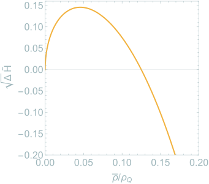
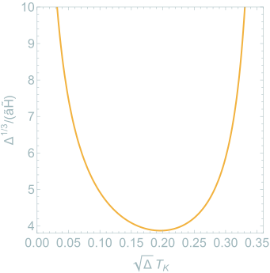

Which geometry?
In loop quantum cosmology, quantum geometry modifies the expansion of a homogeneous universe at high density. Followed back in time, the volume of space does not shrink to zero: it reaches a minimum and grows again, so a bounce takes the place of the big bang. This picture comes from the equations for the phase space variables. It is natural to ask whether it survives once one asks which spacetime geometry these variables describe.
In general relativity, the constraints answer this question themselves. The bracket of two Hamiltonian constraints has the inverse spatial metric as its structure function, so the algebra of the constraints knows which metric is the physical one. When quantum effects modify the Hamiltonian constraint, the structure function changes with it, and in emergent modified gravity it defines the spatial metric of an emergent spacetime. Covariance then requires a condition beyond the closure of the algebra. Martin Bojowald, Erick Duque and I extended these conditions to perturbations around cosmological backgrounds and applied them to the existing models of loop quantum cosmology. We found that these models are either not covariant or, once their emergent metric is used, keep a physical singularity, even though the scale factor never reaches zero.
A bounce at an eighth of the Planck density
The singular case arises for the anomaly-free model of scalar perturbations with holonomy corrections of Cailleteau, Mielczarek, Barrau and Grain. Its equations are consistent as a gauge theory, but the spacetime metric used with them so far left out a factor that covariance requires. With that factor, the emergent line element implies a new effective Friedmann equation. For a universe filled with a free massless scalar, one finds that the emergent scale factor reaches a nonzero minimum when the density parameter ρ̄ equals ρQ/8. Here ρQ = 3/(8πGΔ) is the Planckian density at which the traditional bounce of loop quantum cosmology occurs, and Δ is the constant area that sets the scale of the holonomy corrections.
Going further into the past, the scale factor grows without bound, and the Ricci scalar diverges a finite proper time before the bounce. The universe therefore begins at a singularity at infinite scale factor, which resembles a ‘time-reversed big rip’.

The density parameter is not the energy density that matter has in this spacetime. Dividing the energy of the scalar field by the emergent volume gives the emergent energy density
ρ̃ = ρ̄ (1 − 2ρ̄/ρQ)3/2 ,
which vanishes at the rip. In this sense the singularity is tamer than a standard big rip: the curvature diverges, but the energy density goes to zero. The largest energy density, reached during the collapse, stays below a tenth of ρQ.
After the bounce


After the bounce, the emergent Hubble parameter rises quickly from zero to a maximum at ρ̄ ≈ 0.046 ρQ, i.e. at √Δ TK ≈ 0.22, and then decays toward the classical expansion of a universe filled with a free massless scalar.

While the comoving Hubble radius shrinks, the expansion accelerates, as it does during inflation. Here this lasts only from the bounce to the minimum of the radius. Throughout this phase the energy density stays more than an order of magnitude below ρQ, closer to the scales of inflationary models than the traditional bounce of loop quantum cosmology, and it seems reasonable to expect the continuum geometry of emergent modified gravity to be a good approximation there.
A model without the rip
The same framework allows covariant models without these singularities, and the paper gives one. A different choice of the modification functions in the perturbed constraint leaves the background dynamics unchanged but makes the inverse background metric take its classical form. The line element is then regular, its Ricci scalar is finite everywhere, and the bounce happens where the traditional one does, at ρQ. The price is that some coefficients in the equations for perturbations diverge near the bounce, so following perturbations through it is a challenge.
I have since found a bouncing model that is covariant and strictly free of singularities without new degrees of freedom, so that perturbations can be followed through the bounce. A paper is in preparation. I am also working on the scalar power spectrum in bouncing cosmologies.
Papers
- Singularities in loop quantum cosmologyarXiv:2507.08116Journal
- Perturbative emergent modified gravity on cosmological backgrounds: KinematicsarXiv:2507.14358Journal
- Anomaly-free scalar perturbations with holonomy corrections in loop quantum cosmologyarXiv:1111.3535
Figures adapted from M. Bojowald, M. Díaz and E. I. Duque, Physical Review D 113, 084060 (2026).